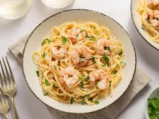

Garlic Shrimp Linguine

Want More Recipes? Click Here
Description:
Shrimp linguine is a delicious pasta dish featuring tender shrimp tossed with linguine noodles in a flavorful sauce. The sauce is typically made from a rich combination of olive oil, garlic, white wine, and a touch of lemon, often finished with fresh parsley for an added burst of freshness. Some variations may include a creamy base with heavy cream or a spicy kick with red pepper flakes. This dish is a perfect balance of savory, citrusy, and slightly garlicky flavors, making it a delightful seafood pasta choice.
Ingredients:
- 1 pound uncooked linguine pasta
- 1 tablespoon butter
- 3 tablespoons white wine
- 3 cloves garlic, minced
- 2 teaspoons grated Parmesan cheese, plus more for serving
- 1 teaspoon chopped fresh parsley, plus more for garnish
- salt and freshly ground black pepper to taste
- 1 pound medium shrimp, peeled and deveined
Want to make this?
Here are the steps:
- Gather all ingredients.
- Bring a large pot of lightly salted water to a boil. Cook linguine at a boil until tender yet firm to the bite, about 11 minutes; drain.
- Melt butter in a medium saucepan over medium-low heat. Add white wine, garlic, Parmesan cheese, and parsley. Season to taste with salt and pepper. Simmer, stirring frequently, over low heat for 3 to 5 minutes.
- Increase heat to medium-high and add shrimp to the saucepan; cook until shrimp begins to turn pink, 3 to 4 minutes. Do not overcook.
- Divide pasta into 8 bowls. Spoon shrimp with sauce on top. Garnish with Parmesan cheese and parsley.
- Enjoy!
Intrested in Macros?